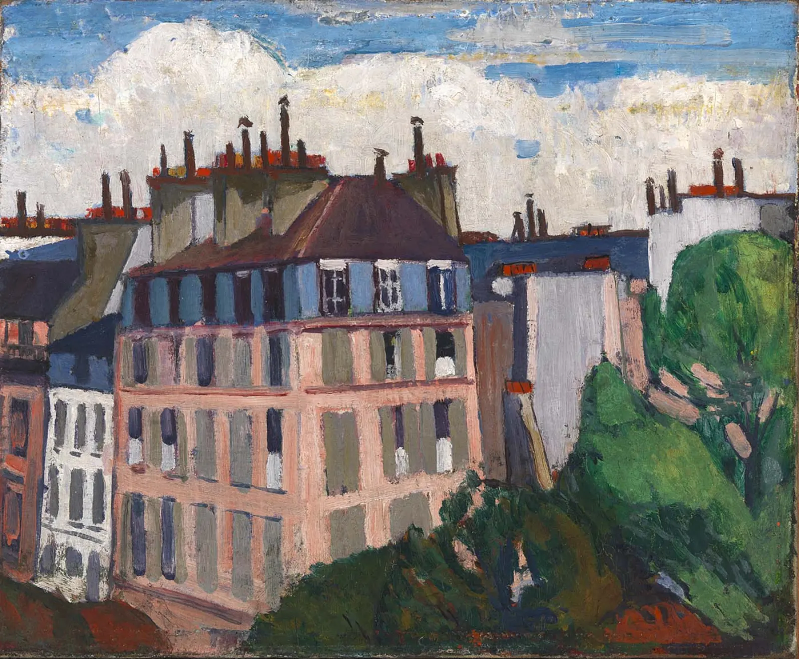
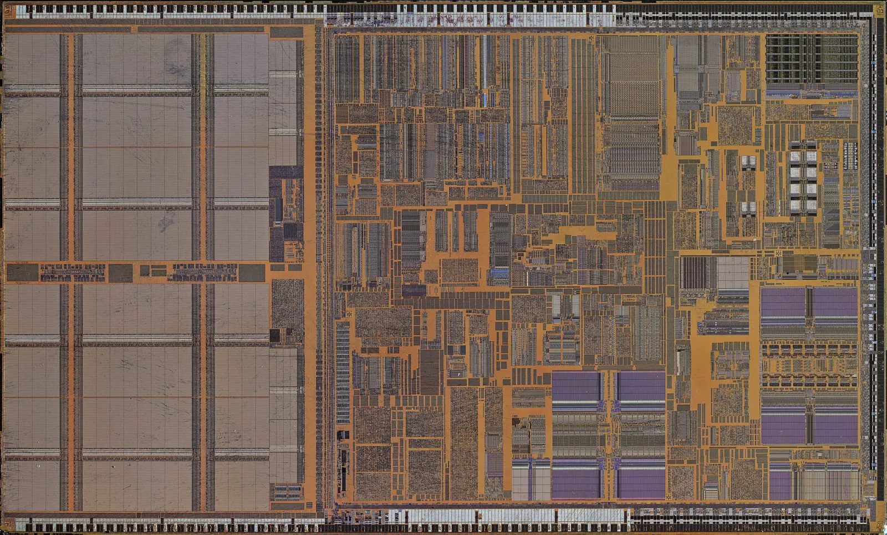

Audits and questionnairesISO 27001, GDPR
Contributed to 2 ISO 27001 audits and handled 20+ security and GDPR questionnaires for B2B clients, from gathering evidence to the final answers.
- ISO 27001
- GDPR
Information security engineer apprentice in the B2B security team of SFR Business, September 2025 to August 2026: 2 ISO 27001 audits, 20+ security and GDPR questionnaires, a Go TLS scanner covering 1,000+ URLs, and compliance calculations cut from days to minutes.

SFR Business is the B2B branch of SFR, one of France's main telecom operators. Internal work, so these entries describe the scope without exposing systems or data.
Contributed to 2 ISO 27001 audits and handled 20+ security and GDPR questionnaires for B2B clients, from gathering evidence to the final answers.
Helped frame an internal AI assistant for security questionnaires, regulatory analysis and document search, and automated compliance calculations in Python and VBA: work that took several days now takes a few minutes.
Checks TLS certificates, DNS, HTTP responses and security headers in-house, so client domains never go to third-party scanners. Covered 1,000+ URLs; used by a 12-person team.
EBIOS RM risk analysis, supplier security assessments and NIS2 and DORA readiness across several B2B scopes, with the reporting and remediation follow-up that goes with them.
Dashboards for security KPIs and recurring governance deliverables, replacing manual consolidation of scattered sources.

Built at EPITA or on my own time, all public on GitHub.
// Hide from lsmod: unlink this module // from the kernel's list of modules. void wlkom_hide_module(void) { wlkom_erase_from_list( THIS_MODULE->list.prev, THIS_MODULE->list.next); } void wlkom_erase_from_list( struct list_head *prev, struct list_head *next) { prev->next = next; next->prev = prev; }
semgrep: name: Semgrep SAST steps: - run: semgrep scan --config p/default gitleaks: name: Secret detection steps: - uses: gitleaks/gitleaks-action@v2 trivy: name: Dependency and container scan steps: - uses: aquasecurity/trivy-action
A Linux kernel rootkit built in a team of four for EPITA's systems course, inside an isolated two-VM QEMU lab: syscall hooking, hiding the module from lsmod, persistence and an authenticated TCP control channel.
A secure delivery platform where every push runs Semgrep, Gitleaks and Trivy, with JWT auth and Argon2 hashing.
A privacy-first budgeting app with no external service: AES-GCM encryption, Keychain key rotation, Face ID and an on-device transaction classifier.
An image pipeline in C with a neural network written from scratch: grid detection, character segmentation and puzzle solving, with a GTK interface.
A cooperative maze game built in a team, with Poetry, Conventional Commits, generated documentation and logging.
Audits and questionnaires on one side, a Go scanner and kernel code on the other. Happy to talk about a 2028 internship.